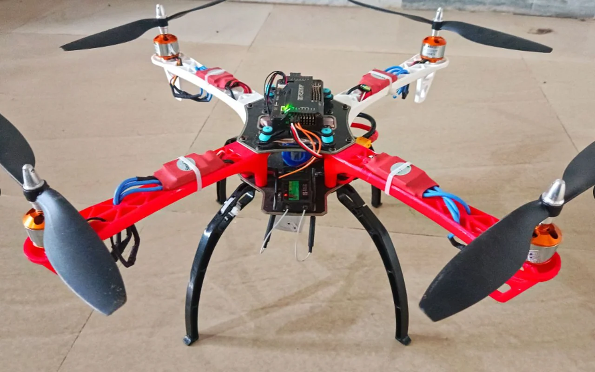
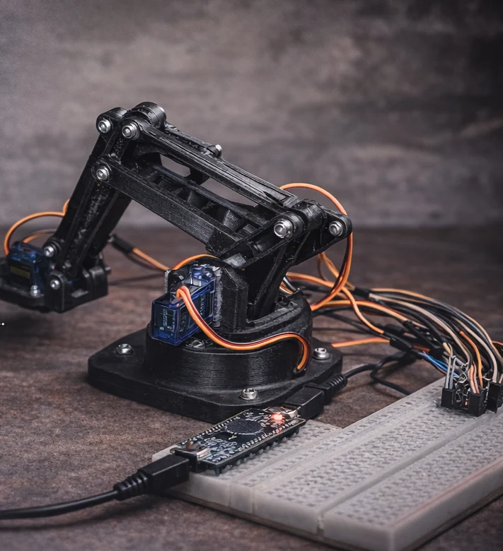
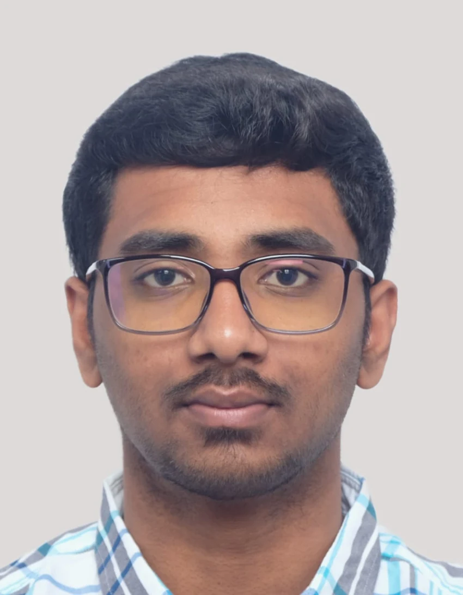

Robotics & Automation
Manipulator design, ROV systems, multirotors, servo actuation and integrated motion control.
PixhawkArduSubRobotics
I am currently pursuing an M.Sc. in Mechanical Engineering at KIT with a specialization in Mechatronics. I design and build robotic systems using mechanics, electronics, control and intelligent software. My work includes underwater vehicles, UAVs, automation and computer vision.

01 / SYSTEMS IN MOTIONF450 / FLIGHT SYSTEMS
ROBOTICS / EMBEDDED
From mechanical CAD to working hardware I approach every project with one question: How can the system work better?
BUILD / TEST / LEARNFeatured mechatronics projects — real robotic hardware, control electronics, and applied intelligent systems.
Filter by discipline, search for technologies, and open any project to see its process and evidence.
My engineering toolkit combines mechanical design, embedded electronics, control, scientific programming and applied AI.
Manipulator design, ROV systems, multirotors, servo actuation and integrated motion control.
Microcontrollers, sensors, PWM outputs, circuit integration and connected hardware prototypes.
Parametric CAD, motion constraints, linkages, kinematics, component assemblies and prototyping.
Pose and hand tracking, touchless game control, spatial gesture mapping and live interaction.
Algorithmic search, game theory, web interfaces, real-time communication and structured software.
Dashboards, DAX measures, dataset preparation and actionable, interactive reporting.
Technical skills drawn from my CV and project experience.
ROS · ESP32 / ESP32-S3 · Arduino Nano · Raspberry Pi · Pixhawk / APM · ArduSub · Mission Planner · Sensor integration · PWM & ESC · Controller tuning
SolidWorks · Autodesk Fusion 360 · CATIA V5 · AutoCAD · FEM · MATLAB · Mechanism design · Assembly constraints · Engineering validation
Python · C++ · Java · JavaScript · OpenCV · MediaPipe · Android Studio · SQL · Git · Linux · Real-time sensor processing
Power BI · DAX · Interactive dashboards · Data cleaning · HCI · WebSockets · HTML / CSS
Academic fundamentals, industrial validation and practical work across mechanical, electronic and intelligent systems.
Energy Transition & Industrial Cable Systems
Industrial Automation
M.Sc. Mechanical Engineering · Specialization in Mechatronics
Currently pursuing graduate studies in mechanical engineering, with a focus on mechatronics.
B.Sc. Engineering Sciences · Robotics orientation
Relevant courses: Automatic Control, Dynamics, Electrical Engineering, Signal Processing, Numerical Analysis, Scientific Programming and FEM.
Artificial Intelligence & Machine Learning
CGPA 8.68/10 · Certificate of Excellence in Evaluation.
Mathematics (A) · Physics (A)
Tamil — Native • English — Fluent • French — B1 • German — Learning
The goal is never just to draw the mechanism or write the code. It's to understand the relationships between sensing, physical constraints, computation and performance.
See the projects ↗Translate an idea into requirements, geometry, component choices and plausible operating behavior.
Bring sensors, controllers, actuators, communications and interfaces into a coherent architecture.
Use simulation, videos and hardware tests to evaluate behavior and identify limits.
Capture what worked, what remains unfinished and how the system could become more capable.
I combine mechanical design, robotics, embedded electronics and software to develop practical engineering systems.
I have worked on underwater robots, UAVs, robotic arms, sensor systems and computer vision applications.
Currently: M.Sc. Mechanical Engineering with a specialization in Mechatronics at Karlsruhe Institute of Technology (KIT). Previously: B.Sc. Engineering Sciences with a robotics focus at École Centrale de Nantes. Graduated with an average of 18.19/20 and 180 validated ECTS. I also completed engineering internships at Lynxeo and Emerson.
Read my full CV ↓Currently studying Mechanical Engineering (Mechatronics specialization) at KIT in Karlsruhe, Germany. Interested in mechatronics, robotics, embedded systems and intelligent automation opportunities.